01
Know what is ready
See whether a resume is selected, an answer is saved, a profile was approved, or the employer browser is still open. These states have different meanings and different next steps.

YourMove · A product experience proposal
YourMove already keeps the important pieces close: opportunities, applicant-reviewed facts, resumes, reusable writing, and an employer application you complete yourself. This proposal makes that careful work easier to see, easier to reuse, and easier to continue.
Design exploration · October 2026 · Synthetic data · No production UI changes
YourMove should help people reuse accurate preparation, then make a clear handoff to the employer’s site. It should feel like a steady desktop tool, not a dashboard you have to interpret.
See whether a resume is selected, an answer is saved, a profile was approved, or the employer browser is still open. These states have different meanings and different next steps.
Bring previous wording and reviewed experience beside the question you are answering. Keep their roles distinct: one is writing to adapt; the other is experience you reviewed.
Review the exact saved material before authorizing a transfer. Complete the employer form and submit it yourself. YourMove records your confirmation; it cannot confirm receipt.
The product advantage: fewer blank-page moments, less repeated setup, and a clearer sense of what YourMove has actually done.
Today the progress panel, suggested job, add form, filters, and actual opportunities compete for the top of the window. The proposed list keeps the counts and recommendation, then gets to the real work sooner.
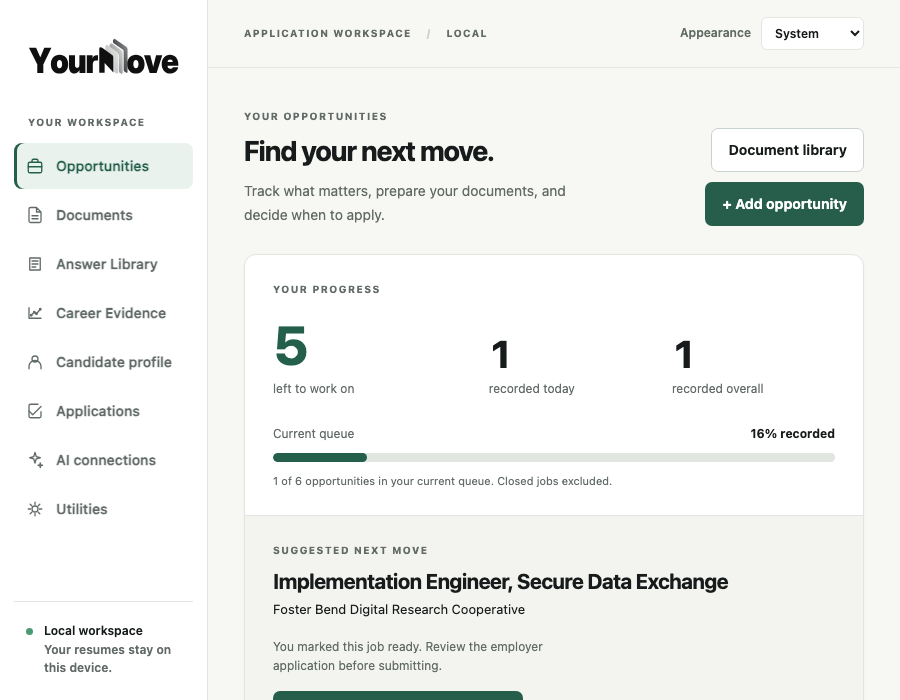
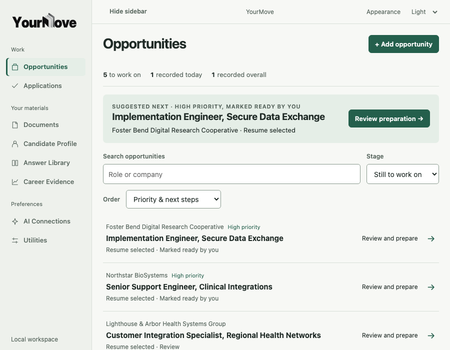
Keep
Remaining work, applications recorded today, and total recorded applications still help orient the search.
Keep its meaning: queue counts exclude closed roles; “marked ready” is a planning label set by the applicant.
Change
Search, stage, and sort remain available. Bulk selection appears when it is useful, rather than leading every row with a deletion checkbox.
Do not imply: a suggested resume is silently selected, or a posting is still open.
The employer’s application belongs to a different environment than YourMove. The job remains the anchor while the applicant reviews, writes, prepares a transfer, and records what they did.
Saved job details · selected document · applicant-approved contacts · answer drafts · cover-letter versions · explicit transfer scope
Review live questions · finish unsupported or sensitive fields · inspect attachments · submit personally
Open an opportunity and review its saved posting.
OVERVIEWSelect a resume. Check which answers and materials need attention.
PREPAREWork on the employer question or saved letter with relevant sources close at hand.
ANSWERS · LETTERInspect exact saved material and authorize its eligible scope.
YOURMOVE → BROWSERReview the employer form, submit there, then record your confirmation.
EMPLOYER → HISTORY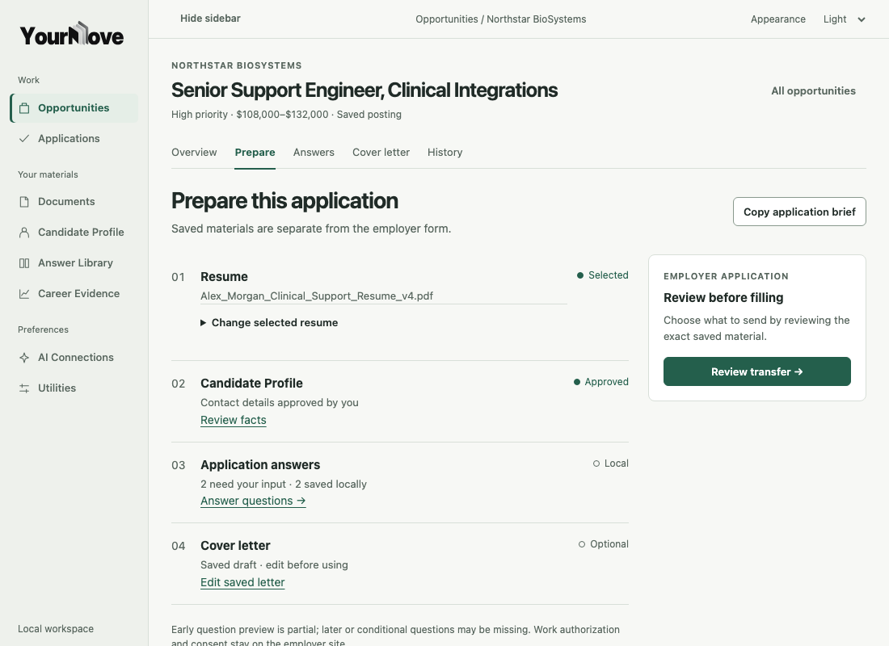
Why the extra transfer review matters: resume, contacts, saved letter, and answers are guarded independently. Some items can succeed while another needs manual attention. A single “All set” state would hide that reality.
Answers and cover letters deserve direct entry from the job. The active prompt and the text being edited stay central; assistance appears when requested.
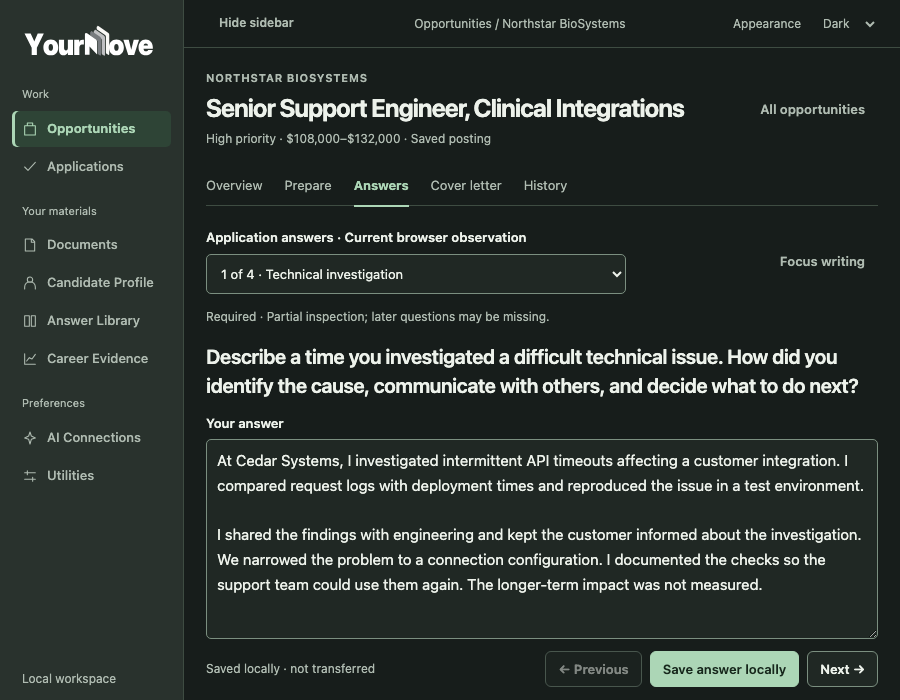
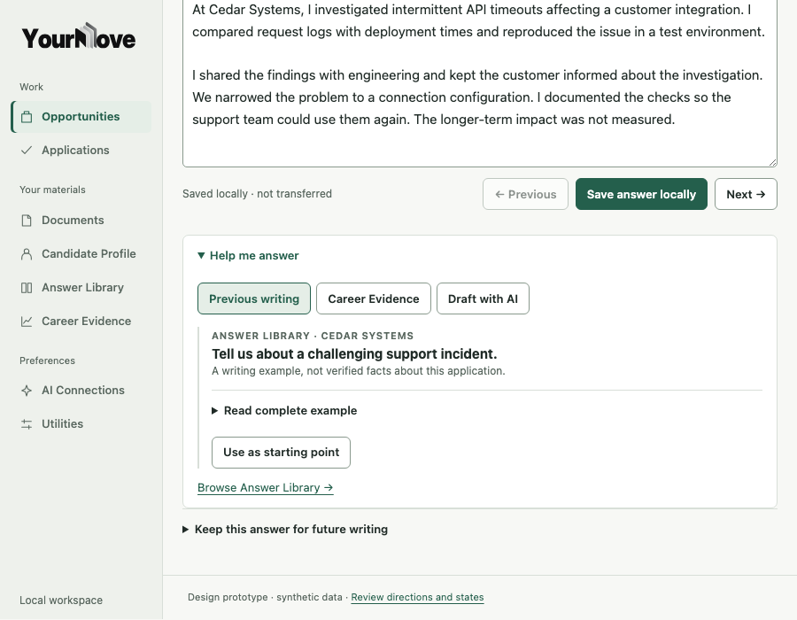
Previous writing
The Answer Library preserves a separate copy with its original question and context. Insertion changes the active editor only; it does not save or establish facts.
Career Evidence
Situation, actions, and outcome remain distinct. “Unknown” stays unknown. Reviewed means applicant-confirmed, not independently verified.
AI proposal
Source review precedes explicit generation authorization. A generated proposal remains separate and unsaved until the applicant adopts it.
Saved answer
Saving does not fill the employer form. Exact question identity and revisions remain important to any later handoff.
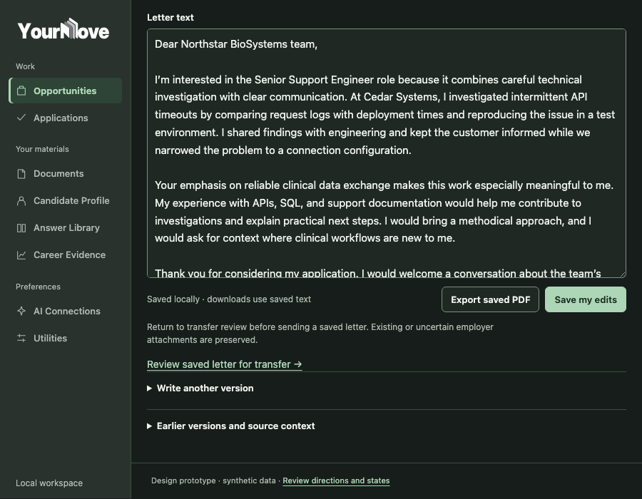
Recovery principle: when a question changes or saving fails, preserve the applicant’s text, name the issue, and offer a safe path back to the current question. Do not imply unsaved edits persist across a restart.
Each supporting surface should answer a plain question: Which document am I using? What did I write before? Which experience did I review? Where is configuration needed?
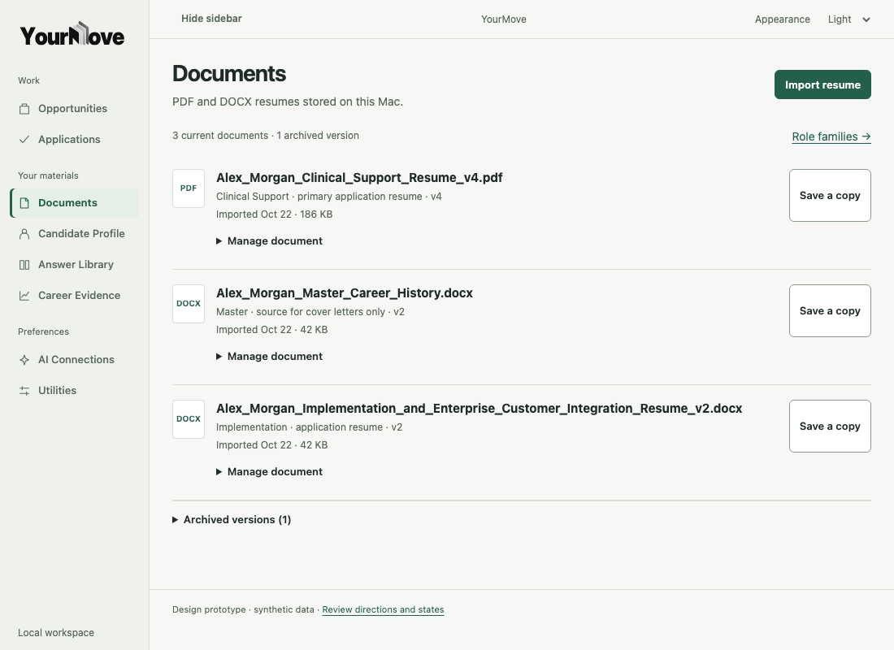
Identify the resume and version first. Keep routing, revision, archive, and deletion under Manage document.
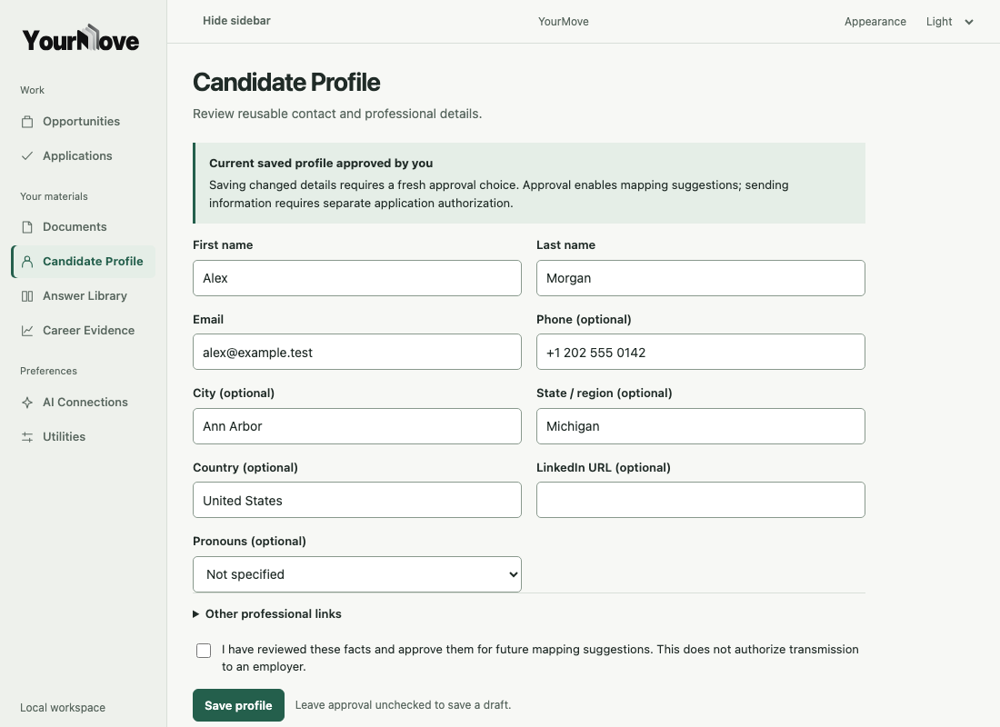
Use “approved by you,” explain mapping suggestions, and keep employer transmission separate.
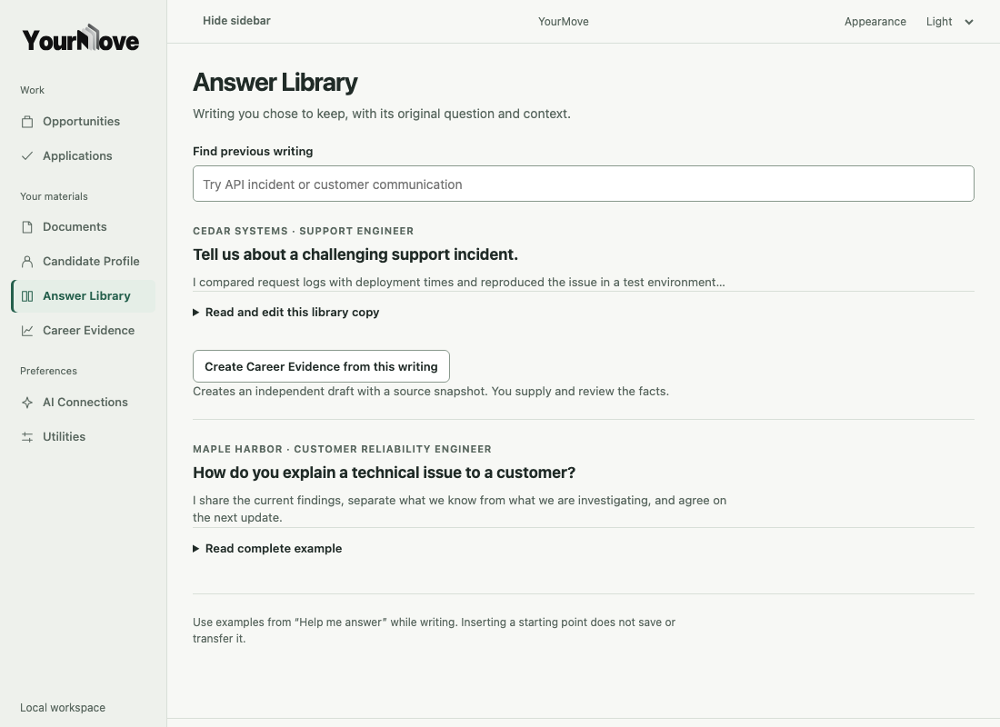
Lead with the original question. Explain how saved answers become independent examples.
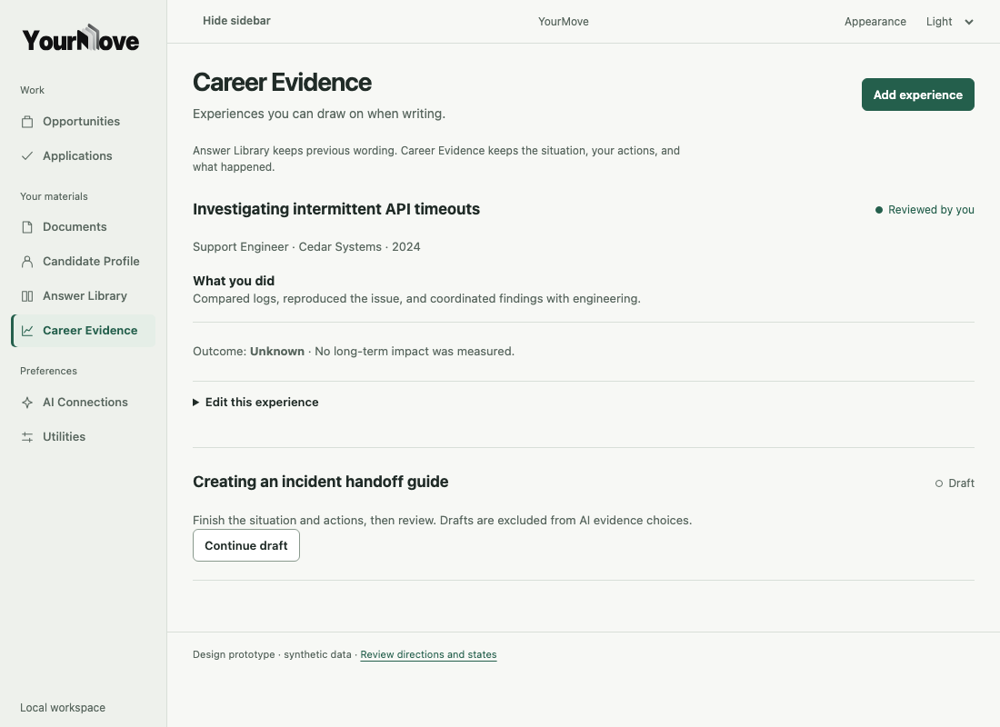
Preserve facts, actions, and outcomes, including what remains unknown.
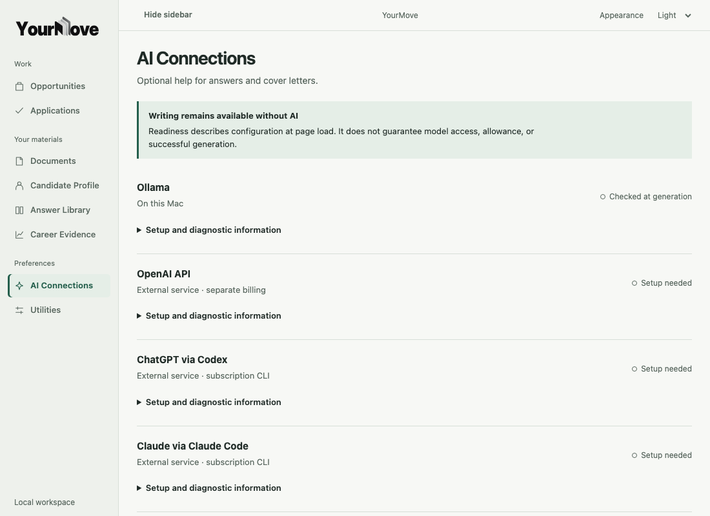
Make configuration secondary to the writing task. Local and external providers are clearly distinguished.
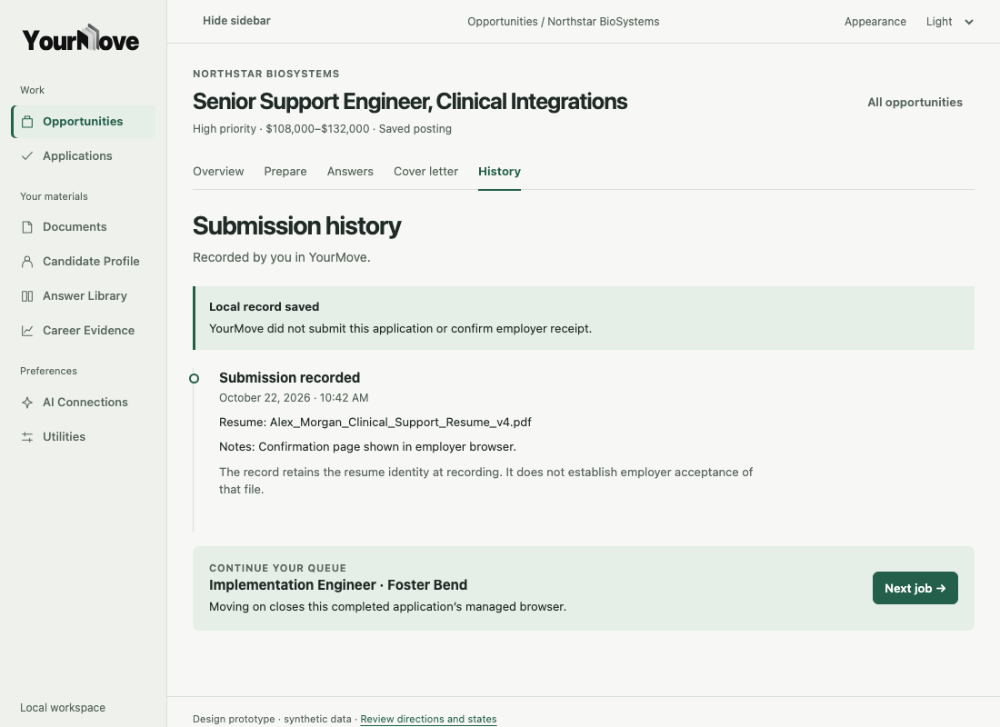
Show a local confirmation, its document association, and an honest receipt caveat.
These directions keep the same product capabilities and synthetic opportunities. They differ in navigation, density, and how much of the window they spend on writing versus the queue.
Stable named navigation, a compact queue, and direct access to job writing. Best balance for frequent use and first-time orientation.
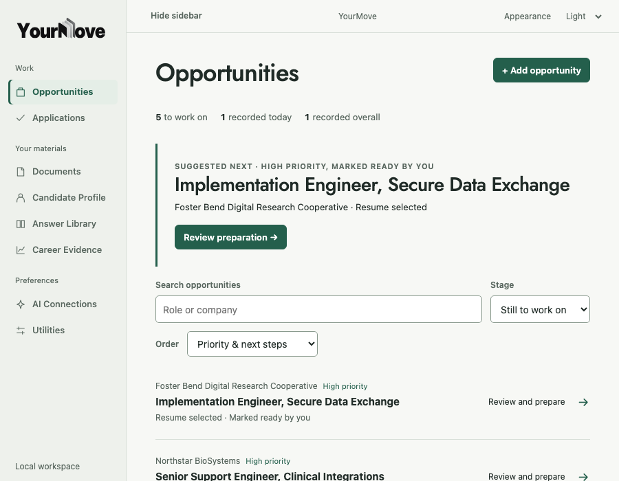
More reading space and softer pacing. Pleasant for reflection, but fewer jobs and controls fit a compact window.
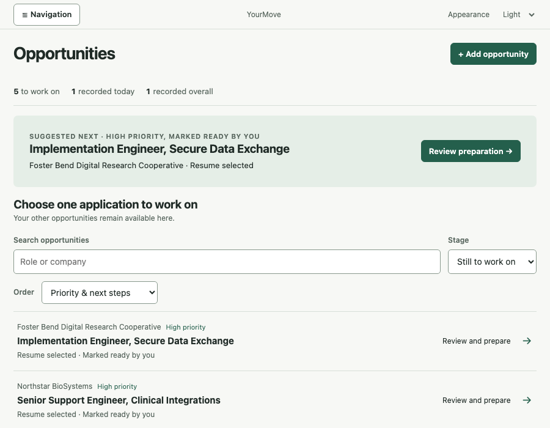
More room for the active task and less persistent navigation. Strong as an optional writing focus; weaker as the default map of the product.
Recommendation: use A as the foundation. Borrow C’s optional focus mode and B’s bounded, readable prose. Keep all destination names available; do not make an icon-only rail the default.
The full qualitative scores and evidence basis are in STRATEGY.md. Proposed scores are design hypotheses; they are not user research. The screenshots support comparisons of layout and visible density only.
The visual change is restrained on purpose. Strong hierarchy should come from the object and its action, not a wall of cards or a badge for every noun.
Use the macOS system stack for controls, questions, metadata, and long writing. Keep Jost as an optional display specimen; it has not been qualified in native WebKit.
Saving an answer, authorizing a transfer, and recording a submission have different consequences. Keep their labels and visual weight distinct.
Use whitespace, headings, and dividers first. Add a surface when it encloses a genuine independent workspace or evidence group.
Keep page movement natural. Don’t make writers manage a scrollable sidebar, editor, and assistance pane at once.
Colors shown are proposed light-theme samples; the full dark palette, control, focus, and accessibility requirements are in DESIGN_SPEC.md.
Readiness should not be a single green light. Give each missing document, undiscovered question, disconnected browser, partial transfer, and stale draft a specific next step.
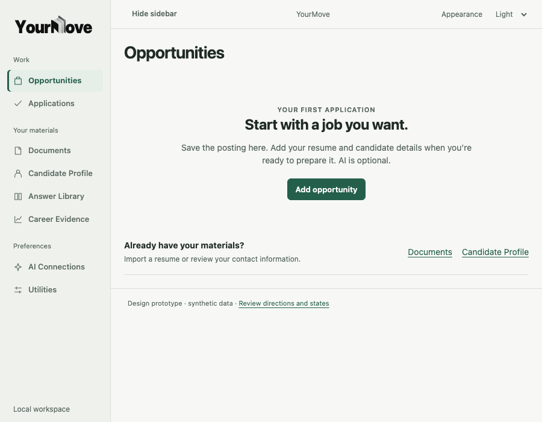
Start with a job. Documents and AI remain optional at this point.
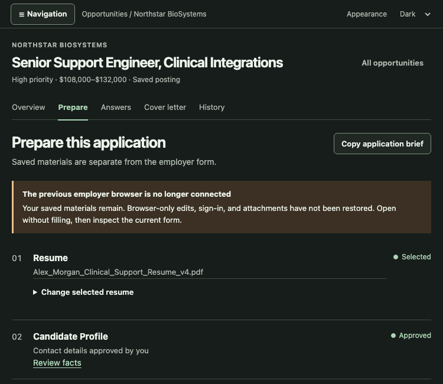
Saved materials remain; the previous browser session is not restored.
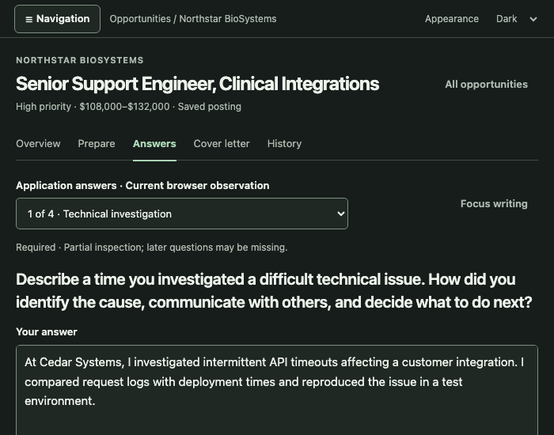
The editor remains readable; saving needs a vertical scroll at 700×550. Native resizing still needs review.
The proposal is intentionally larger than the first implementation. Each increment should produce a visible gain, keep current server-rendered behavior, and earn approval before the next begins.
Revise the shared navigation and Opportunities hierarchy. Keep current filters, prioritization, form posts, and deletion safeguards.
Preserve the current editor, source review, explicit save, and return behavior. Check keyboard focus and stale drafts in Wails.
Compose the existing authorization surface around item-level outcomes; retain independent transfer guards and manual submission.
Use the same object-first language and test document version continuity, approval semantics, and restart honesty.
For every increment: same-data before/after evidence → real Wails sizing and interaction review → owner feedback → accepted merge → CI verification.
Owner review
These are the decisions that matter now. The remaining screen details can be refined inside the approved direction.